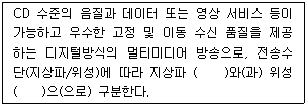
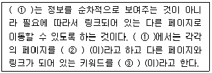
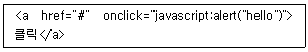
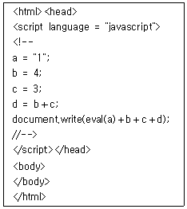
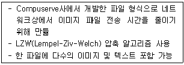

멀티미디어콘텐츠제작전문가(구) (2007-03-04 기출문제)
1과목: 멀티미디어개론
1. 다음 중 전기통신의 개선과 합리적 이용, 전기통신 업무의 이용증대와 효율적 운용, 그리고 세계 전기통신의 균형 있는 발전을 위해 국제간 협력 증진 등 공동 노력을 추구할 목적으로 설립한 기구로 옳은 것은?
- ISO
- BSI
- CEN
- ITU
(정답률: 알수없음)

2. 다음 중 우리나라에서 사용하는 아날로그 텔레비전 방송을 위한 비디오 신호 형식은?
- NTSC
- PAL
- SECAM
- MPEG
(정답률: 알수없음)
3. ( )안에 공통으로 들어갈 내용으로 옳은 것은?

- ISDN
- DMB
- POP
- 뉴미디어
(정답률: 알수없음)
4. 좁은 의미에서는 Walled Garden, VOD 등 초고속 인터넷의 부가 서비스로 서비스 영역을 PC에서 TV로 확장시킨 개념이지만, 넓은 의미에서는 초고속 인터넷의 가입자 망 구간을 물리적인 방송매체로 활용하여 오디오/비디오형태의 방송채널을 적극적으로 수용하는 것을 포함한다. IP네트워크상에서 방송과 VOD형태의 TV 및 비디오를 전달하는 서비스로 정의할 수 있는 것은?
- IPTV
- SDTV
- VRML
- SGML
(정답률: 알수없음)
5. IPv6에 대한 설명으로 거리가 먼 것은?
- 새로운 기술이나 응용분야에 의해 요구되는 프로토콜의 확장을 허용하도록 설계되었다.
- IPv6는 3개의 주소 유형 즉, 유니캐스트, 애니캐스트, 멀티캐스트로 구성되어 있다.
- IPv6는 헤더가 확장되어, 패킷의 출처 인증, 데이터 무결성의 보장 및 비밀의 보장 등을 위한 메커니즘을 지정할 수 있다.
- IPv6에서는 64비트로 표현되어 264개의 주소가 가능하다.
(정답률: 알수없음)
6. 동영상의 부호화는 영상과 오디오를 함께 부호화하여 압축한다. 다음 중 영상에 대한 ITU-T 권고 국제표준에 해당하는 것은?
- G.711
- H.261
- MPEG-2
- MPEG-3
(정답률: 알수없음)
7. IP 주소 4.5.6.9는 어느 클래스에 속하는가?
- 클래스 A
- 클래스 B
- 클래스 C
- 클래스 D
(정답률: 알수없음)
8. 다음 중 IP 주소 241.1.2.3에 대한 설명으로 맞는 것은?
- netid는 241이다.
- 클래스(class)는 E이다.
- hostid는 1.2.3 이다.
- netid는 11110이다.
(정답률: 알수없음)
9. 다음 중 MIME 프로토콜에 대한 설명으로 옳은 것은?
- MIME의 원문 표기는 Macro Internet Mail Extensions이다.
- SMTP를 통하여 데이터가 송신될 수 있도록 허용하는 부가적인 프로토콜이다.
- 인터넷을 감시하고 유지보수하기 위한 기본적인 동작들의 조합을 제공한다.
- 인터넷에서 장치들을 관리하기 위한 프로토콜이다.
(정답률: 알수없음)
10. 다음 중 전자 우편에 사용되는 프로토콜은 무엇인가?
- HTTP
- FTP
- SMTP
- Telnet
(정답률: 알수없음)
11. LAN상에서 라우터가 멀티캐스트 통신기능을 구비한 PC에 대해 멀티캐스트 패킷을 분배하는 경우에 사용하는 것이다. 즉 PC가 멀티캐스트로 통신할 수 있다는 것을 라우터에 통지하는 프로토콜은?
- IGMP
- UDP
- PDP
- SNMP
(정답률: 알수없음)
12. 시스템의 정상적인 서비스를 방해할 목적으로 대량의 데이터를 보내 대상 네트워크나 시스템의 성능을 급격히 저하시켜 대상 시스템에서 제공하는 서비스를 정상적으로 사용하지 못하게 하는 공격으로 일반적인 해킹 수법 중 하나인 것은?
- 트로이 목마
- 웜바이러스
- 셀스크립트 공격
- 서비스 거부 공격
(정답률: 알수없음)
13. ( )안에 들어갈 적당한 단어를 순서대로 나열한 것은?

- ① 하이퍼링크, ② HTML, ③ 텍스트
- ① 하이퍼텍스트, ② 노드, ③ 앵커
- ① 하이퍼미디어, ② 파일, ③ 태그
- ① 하이퍼카드, ② 데이터, ③ 스트링
(정답률: 알수없음)
14. 모바일 환경의 개념으로 거리가 가장 먼 것은?
- 모바일 전송 기술 중 장거리 방식은 단거리 방식에 비해 거리 제한이 적으며 전송 용량이 크고 속도가 빠르다.
- RFID는 무선주파수를 이용하여 초소형 칩(Tag)이 부착된 대상(물건, 사람 등)과 RFID 리더 사이에 데이터 통신을 통해 대상을 식별할 수 있는 기술이다.
- 블루투스(bluetooth)는 모바일 기기 및 기타 전자기기를 근거리 무선으로 연결하는 통신규격이 다.
- 장거리 무선 통신 기술 중 CDMA2000 시스템은 미국 및 한국 등에서 상용 서비스 중인 IS-95 CDMA 이동표준의 제3세대형이다.
(정답률: 알수없음)
15. 다음 이미지 및 그래픽의 컬러 모델에서 가산 모델의 3원색에 들지 않는 것은?
- Red
- Yellow
- Blue
- Green
(정답률: 알수없음)
16. 다음의 색표현 방식 중 컬러프린트 인쇄 시 주로 사용되는 것은?
- RGB방식
- YUV방식
- HSB방식
- CMYK방식
(정답률: 알수없음)
17. CD-ROM의 성능은 주기억 공간으로의 데이터 전송속도로 표현하며 보통 배속으로 표시하는데 이 때, 1배속의 속도는 얼마인가?
- 100K bps
- 150K bps
- 200K bps
- 250K bps
(정답률: 알수없음)
18. 멀티미디어 하드웨어 환경에서 미디어처리장치 중 성격이 다른 하나는?
- 사운드 카드
- 스피커
- 마이크로폰
- 비디오 카드
(정답률: 알수없음)
19. 멀티미디어 시스템에서 비디오를 컴퓨터와 연결시켜 비디오테이프의 내용을 모니터 화면에서 볼 수 있는 장치는?
- 사운드 카드
- 영상 오버레이 카드
- 그래픽 가속 보드
- HMD(Head Mounted Display)
(정답률: 알수없음)
20. 다음 중 정부기관을 나타내는 도메인 명으로 옳은 것은?
- com
- go
- co
- pe
(정답률: 알수없음)
21. 다음은 미디 음악작업에 활용되는 소프트웨어이다. 거리가 가장 먼 것은?
- 작곡용 소프트웨어
- 악보용 소프트웨어
- CAD용 소프트웨어
- 음색편집용 소프트웨어
(정답률: 알수없음)
22. 본래의 소프트웨어가 부족한 면을 보강해주는 프로그램으로 동영상 지원이나 언어지원, 다양한 멀티미디어 기능을 지원해주는 등 추가(add on)된 프로그램을 의미하는 것은?.
- 플러그인(Plug-in)
- 자바 애플릿(Applet)
- 스트리밍(Streaming)
- 하이퍼링크(Hyperlink)
(정답률: 알수없음)
23. 다음 중 파일 시스템의 기능으로 거리가 가장 먼 것은?
- 예비와 복구
- 바이러스 차단 관리
- 파일생성
- 파일간의 정보 전송
(정답률: 알수없음)
24. Unix 명령어 중 현재 작업 디렉토리의 위치 정보를 절대 경로로 보여주는 명령어는 무엇인가?
- kill
- mk
- pwd
- rm
(정답률: 알수없음)
25. 정보화촉진기본법상 정보화시책의 기본 원칙과 거리가 가장 먼 것은?
- 환경변화에 능동적으로 대응하는 제도의 수립, 시행
- 정보통신기반에 대한 자유로운 접근과 활용
- 공공투자의 확대보장
- 개인의 사생활 및 지적 소유권의 보호
(정답률: 알수없음)
2과목: 멀티미디어기획및디자인
26. 마케팅의 기본 원리와 가장 거리가 먼 내용은?
- 소비자의 욕구를 파악한다.
- 회사의 세무관계를 조사한다.
- 좋은 디자인은 훌륭한 판매자의 역할을 한다.
- 소비자의 행동을 파악한다.
(정답률: 알수없음)
27. 기본적인 마케팅 기능 중 촉진기능에 분류되는 기능은?
- 표준화의 등급화
- 수송
- 보관
- 구매
(정답률: 알수없음)
28. 다음 중 “하나 또는 그 이상의 광고매체를 사용하여 어느 장소에서나 측정 가능한 즉각적인 반응이나 거래가 이루어지도록 상호작용하는 마케팅 시스템을 말하는데 그 거래 내용은 데이터베이스에 저장되어 활용된다.”에 해당하는 마케팅은?
- 다이렉트 마케팅
- 매스 마케팅
- 텔레마케팅
- 시장 마케팅
(정답률: 알수없음)
29. 다음 중 디자인 개념에 대한 설명으로 거리가 먼 것은?
- 프랑스어의 데생(dessein)과 관련 있다.
- 라틴어의 스케치하다, 소묘를 뜻하는 데지그라네(Designare)에서 나온 용어이다.
- 주위에 있는 어떤 대상의 이미지를 구체화, 시각화시키는 작업이다.
- 디자인 조건으로 점, 선, 면이 있다.
(정답률: 알수없음)
30. 현대 디자인의 양식을 형성한 근원이 아닌 것은?
- 르네상스
- 기술혁신에 따른 19세기 엔지니어들의 구조
- 아르누보의 신양식
- 모리스의 Arts and crafts movement
(정답률: 알수없음)
31. 디자인의 요소들 간의 관계를 원활하게 유지하기 위하여 적용되는 조건은?
- 질서성
- 심미성
- 합목적성
- 경제성
(정답률: 알수없음)
32. 디자인의 조형 요소 중 콘텐츠의 화면 분할을 하기 위한 가장 기본적인 요소를 무엇이라고 하는가?
- 점
- 선
- 면
- 입체
(정답률: 알수없음)
33. 디자인의 요소 중 물체 표면이 가지고 있는 특징의 차이를 시각과 촉각을 통하여 느낄 수 있는 것을 무엇이라 하는가?
- 색채
- 양감
- 공간감
- 재질감
(정답률: 알수없음)
34. 웹사이트 디자인에 사용될 수 있는 스타일 기법의 예이다. 잘못 설명된 것은?
- 키치(kitsch)란 독일어 ‘kitschen'에서 유래된 말로 어딘지 촌스럽고 과장된 표현, 현란한 컬러, 그러나 사용자에게 편안함과 해학의 미를 전달하는 사이트를 말한다.
- 그런지(grunge)는 자유분방한 타이포의 배열, 이미지들의 겹침 등 선명하고 명쾌한 표현은 아니 지만 사용자들에게 신선함을 선사하는 사이트를 그런지 스타일로 분류할 수 있다.
- 픽셀아트는 작은, 최소한의, 간소한 등의 사전적 의미를 가진 말로 텍스트, 이미지 등의 절제된 표현, 극도로 단순한 제작 방식으로 만들어진 사이트를 말한다.
- 스토리텔링은 사용자와 대화하는 형식ㄷ으로 이루어지는 기법으로, 웹상에서 스토리텔링은 사용자를 이야기에 참여시켜 인터랙션을 유도한다.
(정답률: 알수없음)
35. 인터페이스 디자인의 대표적인 기법으로 그 단어가 갖는 원래 의미는 숨긴 채 비유하는 형상만 드러내어 표현하려는 대상을 설명하거나 그 특질을 묘사한 것을 무엇이라 하는가?
- 그리드(Grid)
- 핫스폿(Hotspot)
- 메타포(Metaphor)
- 하이퍼미디어(Hyper media)
(정답률: 알수없음)
36. 인터페이스 디자인을 위한 조형 원리에 포함되지 않는 것은?
- 통일감
- 조화
- 절제
- 균형
(정답률: 알수없음)
37. 좋은 웹 내비게이션의 조건으로 거리가 가장 먼 것은?
- 쉽게 학습할 수 있다.
- 일관성이 있다.
- 사이트 목적에 부합된다.
- 반드시 선형적인 구조를 가져야 한다.
(정답률: 알수없음)
38. 다음 중 멀티미디어 인터페이스 디자인 시 고려해야 할 사항으로 옳은 것은?
- 시각적인 효과만을 표현하여 사용자의 관심을 유도한다.
- 커뮤니케이션 매체로서의 속성보다는 사회 문화적인 요소로서 작용된다.
- 사용의 편리성과 기능성을 충분히 고려하여 개발한다.
- 정보디자인과 인터랙션 디자인은 인터페이스 디자인과는 별도로 디자인한다.
(정답률: 알수없음)
39. 멀티미디어 디자인의 요소 중 시각적 요소의 상호작용에 의해 방향감, 공간감, 위치감, 중량감의 변화를 느낄 수 있는 요소는 무엇인가?
- 개념요소
- 시각요소
- 상관요소
- 실제요소
(정답률: 알수없음)
40. 다음은 멀티미디어 콘텐츠 제작 시 G.Kearley의 저작원리를 나열한 것이다. 거리가 가장 먼 것은?
- 제시되어야 할 모든 개념들은 하나의 명제나 아이디어를 담을 작은 조각으로 구성하여 덩어리를 짓는다.
- 데이터베이스내의 각 문서는 다른 문서와의 링크를 포함시켜 내적인 연관성을 두도록 한다.
- 정확한 인용 및 인용의 중복을 피하기 위해 모든 참고 문헌의 목록을 만들어 둔다.
- 화면설계는 색을 다양하게 사용하여 화려하게 구성하며 알아보기 쉽게 설계되어야 한다.
(정답률: 알수없음)
41. 다음 그래픽디자인 요소 중 선에 대한 설명으로 거리가 가장 먼 것은?
- 일반적 의미는 실과 같다.
- 색과 결합하여 공간감이나 입체감을 나타낸다.
- 공간에 있는 방향성과 길이가 있다.
- 크기가 없는 점의 연장으로서의 점의 이동에 따라 직선, 곡선이 생성된다.
(정답률: 알수없음)
42. 타이포그래피(Typography)의 조건 중 적합하지 않는 것은?
- 글자 Spacing
- 여백과의 독립
- Display Type
- 정보량의 가독성
(정답률: 알수없음)
43. 오늘날 타이포그래피는 넓은 의미로 해석되고 활용되고 있다. 다음 중 타이포그래피에 대한 설명으로 거리가 가장 먼 것은?
- 글자 디자인
- 활자체 선택과 배열
- 영상매체를 통한 글자 활용
- 단순화 된 그림으로, 대상의 성질이나 사용법을 표시
(정답률: 알수없음)
44. 타이포그래피(typography)에서 활자요소나 이미지 요소들을 구성 할 때 디자인 전체의 통일성을 확립할 수 있도록 해주고 시각 기준선, 그리드 모듈, 본문 컬럼, 컬럼 간격, 마진 등으로 구성되는 것을 무엇이라 하는가?
- 그리드
- 구조
- 가독성
- 자족
(정답률: 알수없음)
45. 점의 성격에 대한 설명 중 거리가 가장 먼 것은?
- 점이 확대되면 선으로 이동된다.
- 원형이나 다각형이 축소되면 점이 된다.
- 한 개의 점은 공간에서 위치를 나타낸다.
- 한선의 양 끝, 2개 선이 만나는 곳에서 볼 수 있다.
(정답률: 알수없음)
46. 색의 3속성이 아닌 것은?
- 명도
- 채도
- 색광
- 색상
(정답률: 알수없음)
47. 물체의 원근감이나 중량감, 실제감을 강하게 느끼게 하는 표현 요소는?
- 점
- 선
- 면
- 명암
(정답률: 알수없음)
48. 벡터그래픽(Vector Graphic) 파일 포맷으로 적당한 것은?
- GIF
- PCX
- EPS
- BMP
(정답률: 알수없음)
49. 스토리보드에 대한 서술 중 거리가 가장 먼 것은?
- 개략적인 윤곽과 배치를 그리는 것을 말한다.
- 웹사이트의 목적을 충분히 전달할 수 있어야 한다.
- 스토리보드 없이 웹디자인에 착수하면 기획이 부실해질 수 있다.
- 마케팅적인 요소만을 스토리보드에 서술한다.
(정답률: 알수없음)
50. 시나리오 평가에 있어서 검토해야 할 항목으로 거리가 가장 먼 것은?
- 시장성
- 독창성
- 모호성
- 기획성
(정답률: 알수없음)
3과목: 멀티미디어저작
51. 데이터베이스(DB)의 특성으로 가장 거리가 먼 것 은?
- 실시간 접근성
- 데이터 일관성 유지
- 동시공유
- 정적인 데이터
(정답률: 알수없음)
52. DBMS(DataBase Management System; 데이테베이스 관리 시스템)의 필수 기능이 아닌 것은?
- 정의기능
- 조작기능
- 제어기능
- 접근기능
(정답률: 알수없음)
53. 다음 중 응용프로그램에 사용 될 데이터베이스를 규정하거나 그 정의를 변경할 목적으로 사용되는 언어는?
- DSDL(Document Schema Definition Languages)
- DDL(Data Definition Language)
- DML(Data Manipulation Language)
- DCL(Data Control Language)
(정답률: 알수없음)
54. 데이터베이스를 구성하는 자료 객체(Entity), 이들의 속성(Attribute), 이들 간에 존재하는 관계(Relation) 그리고 자료의 조작과 이들 자료값들이 갖는 제약 조건에 관한 정의를 총칭해서 무엇이라 하는가?
- 스키마(schema)
- 도메인(domain)
- 질의어(query)
- 튜플(tuple)
(정답률: 알수없음)
55. 시스템 카탈로그(System Catalog)라고도 하며 데이터베이스가 취급하는 모든 데이터 객체들에 대한 정의나 명세에 관한 정보를 유지관리하며, 시스템뿐만 아니라 사용자도 접근 가능한 것은?
- 데이터 사전
- 데이터 디렉토리
- 데이터 파일
- 데이터 로그
(정답률: 알수없음)
56. 다음 중 객체지향(Object-oriented) 기법의 장점으로 거리가 가장 먼 것은?
- 생산성을 감소시킨다.
- 프로그램 개발 시 재 사용성이 용이하다.
- 현실 세계를 이해하는 모델링 방식을 제공한다.
- 소프트웨어의 유연성이 증가된다.
(정답률: 알수없음)
57. 객체지향 개념 중 정보은닉(Information Hiding)과 캡슐화 (encapsulation)의 장점으로 볼 수 있는 것은?
- 비 확장성
- 생산성 감소
- 구현 시 처리시간이 지연
- 컴포넌트 재 사용성이 용이
(정답률: 알수없음)
58. 다음 중 객체 중심 설계가 지향하는 소프트웨어 설계 개념으로 가장 거리가 먼 것은?
- 캡슐화
- 정보은닉
- 추상화
- 일괄처리
(정답률: 알수없음)
59. 다음 중 이미 정의된 상위 클래스 즉, 슈퍼 클래스나 부모 클래스의 메소드를 비롯한 모든 속성을 하위 클래스가 물려받는 것은?
- 정보은닉
- 추상화
- 상속성
- 메소드
(정답률: 알수없음)
60. 멀티미디어 저작도구의 기능으로 거리가 가장 먼 것은?
- 전문화 된 형식과 구성으로 일반 사용자가 사용하기에는 어려워야 한다.
- 사용자의 다양한 입력에 따라 제어 흐름을 조정할 수 있어야 한다.
- 미디어 파일들 간의 동기화를 잘 표현하고, 맞추어 실행할 수 있어야 한다.
- 다양한 미디어 파일이나 미디어 장치와 쉽고 매끄럽게 연결되어야 한다.
(정답률: 알수없음)
61. Flash 무비를 HTML 문서 안에 포함 시키려고 한다. 다음 중 어떠한 태그를 사용해야 하는가?
- LINK
- HREF
- FORM
- EMBED
(정답률: 알수없음)
62. 플래시 무비파일(swf)이나 독립실행파일(exe)을 더블 클릭하여 재생시킬 때 창의 크기에 따라 무비의 크기가 영향을 받지 않게 하기 위해 사용하는 액션스크립트로 옳은 것은?
- fscommand("exec", "true")
- fscommand("exec", "false")
- fscommand("allowscale", "false")
- fscommand("allowscale", "true")
(정답률: 알수없음)
63. 디렉터 혹은 오쏘웨어에서 제작한 저작물이 인터넷에서 재생할 수 있도록 하는 기술은?
- 쇽웨이브(Shockwave)
- 프리미어(Adobe Premier)
- 하이퍼텍스트(HyperText)
- 퍼블리시(Publish)
(정답률: 알수없음)
64. 매크로미디어사의 멀티미디어 저작도구인 디렉터의 스크립트 언어는?
- 링고 스크립트
- 오픈 스크립트
- C언어 프로그램
- 액션 스크립트
(정답률: 알수없음)
65. 링크를 건 페이지가 특정 창에 나오도록 타켓(target)을 정할 때, 하이퍼링크 된 문서를 현재 프레임에서 열게 하는 target은?
- target="_self“
- target="_top"
- target="_parent“
- target="_blank"
(정답률: 알수없음)
66. 다음 중 PHP 언어에 대한 설명으로 거리가 가장 먼 것은?
- 인터넷에서 사용되는 스크립트 언어이다.
- 웹과 데이터베이스를 연결하는 기능이 있다.
- 인터넷 사용자의 컴퓨터에서만 실행되는 언어이다.
- 객체지향적인 요소를 지원하면서도 사용하기 쉽다.
(정답률: 알수없음)
67. 다음 XML 문법에 대한 설명으로 옳은 것은?
- XML 선언은 <?XML" 문자로 시작하여 />로 끝나야 한다.
- XML 선언할 때 <? 와 XML" 은 띄어 써야 한다.
- 속성은 반드시 encoding, standalone, version 순으로 기술되어야 한다.
- 주석은 <!-- 로 시작해서 -->로 끝나야 한다.
(정답률: 알수없음)
68. 프로그래잉 언어 중 자바(JAVA)에 대한 설명으로 거리가 가장 먼 것은?
- 이식성이 강한 언어이다.
- 네트워킹과 멀티스레드가 가능하다.
- 객체 지향 언어이다.
- 스크립트 언어이다.
(정답률: 알수없음)
69. 스크립트 언어와 대표적인 저작도구로 짝이 맞는 것은?
- 오픈스크립트(Open Script)-디렉터(Director)
- 링고(Lingo)-오소웨어 프로페셔널(Authorware Professional)
- 하이퍼토크(Hypertalk)-하이퍼카드(HyperCard)
- 오픈스크립트(Open Script)-아이콘오소(IconAuthor)
(정답률: 알수없음)
70. 다음 중 스크립트 언어에 대한 설명으로 거리가 가장 먼 것은?
- Multimedia ToolBook은 HyperTalk를 스크립트 언어로 사용한다.
- 명령어의 집합은 버튼(button)등과 같은 스크린상의 상호작용 요소와 결합될 수 있다.
- 스크립트 언어(script language)는 프로그래밍 언어와 유사한 형태를 가지는 명령어의 집합이 다.
- 각 스크립트 언어는 자기 자신만의 스크립트를 지원하기 위한 스크립트 에디터, 인터프리터, 디버거 등과 같은 툴을 제공하고 있다.
(정답률: 알수없음)
71. 다음 중 JavaScript를 사용해서 페이지의 배경색상을 초록색(green)으로 바꾸려고 할 때 맞는 코드는?
- bcolor="green";
- page.bgcolor="green";
- document.bgColor="green";
- document.changeBgColor"green";
(정답률: 알수없음)
72. 다음 중 자바스크립트 변수로 사용 할 수 있는 것은?
- transient
- super
- inter
- try
(정답률: 알수없음)
73. 자바 스크립트(JavaScript)의 브라우저 내장 객체 중 독립적으로 사용되며, 브라우저의 종류, 사용언어, 시스템 종류 등의 정보를 제공하는 객체는?
- Navigator 객체
- Window 객체
- History 객체
- Location 객체
(정답률: 알수없음)
74. 다음 JavaScript에서 오류가 발생하는 이유로 맞는 것은?

- 인용 부호에 문제가 있다.
- <A>태그에서는 onclick 이벤트를 사용할 수 없다.
- 소괄호 대신 대괄호를 사용해야 한다.
- javascript:alert가 아니라 alert를 사용해야 한다.
(정답률: 알수없음)
75. 다음과 같이 HTML에 포함된 자바 스크립트 소스가 실행되어 웹브라우저에 나타나는 값은?

- 14343
- 1437
- 177
- 15
(정답률: 알수없음)
4과목: 멀티미디어제작기술
76. 미국전자기술자협회에서 표준화한 Serial bus의 새로운 규격은?
- PCMCIA
- Bluetooth
- FDD
- IEEE 1394
(정답률: 알수없음)
77. 인터넷 서비스를 위한 통신프로토콜에 대한 설명으로 옳은 것은?
- FTP는 전자우편 서비스를 제공하기 위해 사용된다.
- TELNET은 컴퓨터 간의 파일 전송을 위해 사용된다.
- IRC는 실시간 채팅과 토론 서비스를 제공하기 위해 사용된다.
- HTTP는 원격지 컴퓨터에 로그인해서 작업하기 위해 사용된다.
(정답률: 알수없음)
78. OSI 모델에서 사용자나 소프트웨어를 네트워크에 접속할 수 있도록 해주며, 전자우편이나 파일 전송, 공유 데이터베이스 관리 등 다양한 분산 정보 서비스를 제공하는 계층은?
- 표현 계층
- 네트워크 계층
- 데이터링크 계층
- 응용 계층
(정답률: 알수없음)
79. 아날로그 사운드의 원음을 그대로 반영하기 위해서는 원음이 가지는 최고 주파수의 몇 배 이상으로 표본화해야 하는가?
- 2배
- 5배
- 10배
- 15배
(정답률: 알수없음)
80. 아날로그 사운드를 디지털로 변환하는 과정 중에 발생하는 지터(Jitter) 에러에 대한 설명으로 옳은 것은?
- 디지털 신호의 전달 과정에서 일어나는 시간축상의 오차
- 아날로그 파형을 양자화 비트로 표현하면서 발생하는 값의 차이
- 가청 주파수보다 높은 고주파 성분 발생으로 인한 에러
- 사운드에 원래 고주파 성분이었던 울림이 없어지고 저주파수의 방해음이 발생하는 것
(정답률: 알수없음)
81. 디지털 신호를 아날로그 신호로 변조하여 보내고, 아날로그 신호를 원래로 디지털 신호로 복조하는 전자장치를 무엇이라 하는가?
- FEP
- MODEM
- CCP
- FTP
(정답률: 알수없음)
82. 화상전화용 국제 표준 규격의 H.263 방식을 압축 알고리즘으로 사용하는 코덱은?
- Cinepak
- Indeo
- divic
- Vivo
(정답률: 알수없음)
83. 이미지/그래픽 파일 포맷 중 다음 설명하는 파일 포맷은?

- GIF(Graphics interchange Format)
- JPEG(Joint Photography Experts Group)
- WMF(Windows Metafile Format)
- TIFF(Tagged Image File Format)
(정답률: 알수없음)
84. MPEG-2 비디오 압축 방식에 대한 설명으로 거리가 가장 먼 것은?
- 목표 전송률을 1.5 Mbits/sec 이하이다.
- MPEG-1에 대한 순방향 호환성을 지원한다.
- MJPEG 포맷(Motion JPEG포맷)을 지원한다.
- 순차주사(Noninterlace)방식과 격행주사(Interlace)방식 모두를 지원한다.
(정답률: 알수없음)
85. 스트리밍 기술에 대한 설명으로 거리가 가장 먼 것은?
- 데이터를 실시간으로 사용자 PC에 전송해 준다.
- 네트워크 대역폭에 영향을 전혀 받지 않는다.
- 순서가 있는 연속적인 멀티미디어 데이터 묶음을 말한다.
- 인터넷 방송 등의 서비스를 제공한다.
(정답률: 알수없음)
86. 비선형(Nonlinear) 영상 편집의 장점이 아닌 것은?
- 편집이 끝난 후에 수정이 쉽다.
- 편집 소스(source)인 영상과 음성을 아날로그화 하여 임의 접근이 가능한 비디오테이프에 저장 한다.
- 영상효과를 자유롭게 조합시킴으로써 풍부한 영상을 만들 수 있다.
- 편집을 반복하고 출력을 하는 과정에서 화질 저하가 거의 없다.
(정답률: 알수없음)
87. Microsoft사와 IBM사가 PC환경에서 사운드 표준 포맷으로 공동 개발한 사운드 포맷은?
- AU
- MID
- RMI
- WAV
(정답률: 알수없음)
88. 다음 중 방송용 비디오 압축방식인 인트라프레임(Intra frame)에 대한 설명으로 맞는 것은?
- 비손실 압축방식이다.
- 포스트프로덕션 과정에 주로 쓰인다.
- 디지타이징 과정을 거치는 모든 비디오 프레임을 분석하는 수학적인 알고리즘을 이용하는 압축 방식이다.
- 외피타입의 압축으로 집단적 프레임이나 그림들을 분석하고 샘플링 된 프레임을 이용하는 압축 방식이다.
(정답률: 알수없음)
89. 다음 중 비디오 데이터의 압축, 복원과 관련이 깊은 것은?
- 모뎀(MODEM)
- 코덱(CODEC)
- 모핑(Morphing)
- 멀티플렉서(Multiplexor)
(정답률: 알수없음)
90. 다음 중 일반적인 비디오 압축 방법으로 거리가 가장 먼 것은?
- 픽셀 당 컬러 비트 수의 축소
- 프레임 크기의 축소
- 프레임 수의 축소
- BMP파일 크기의 축소
(정답률: 알수없음)
91. 다음 중 RGB 모드에 대한 설명으로 옳은 것은?
- 텔레비전에 사용하는 방식으로 인간의 눈이 색보다 밝기에 민감하다는 사실을 이용한 방식이다.
- 빛의 삼원색을 이용하여 가산 혼합 방식으로 컬러를 표현한다.
- 색의 삼원색을 이용하여 감색 혼합 방식으로 컬러를 표현한다.
- 색조, 채도, 명도를 이용하여 특정 컬러를 표현하는 방식이다.
(정답률: 알수없음)
92. 다음 중 소리의 기본 요소에 대한 설명으로 적절치 않은 것은?
- 주파수는 초당 파형의 반복 횟수를 의미하며 소리의 높낮이를 결정한다.
- 진폭은 사운드 파형의 기준선에서 최고점까지의 거리를 의미하며 소리의 크기와 관련이 있다.
- 같은 음의 높이와 크기를 가져도 악기마다 고유한 소리의 특징이 있는데 이런 특징을 음색이라 한다.
- 음압 레벨의 단위는 헤르츠(Hz)를 사용한다.
(정답률: 알수없음)
93. 정지 화상이나 그래픽들을 연속적으로 보여주어 보는 사람으로 하여금 화상들을 연속된 동작으로 인식하도록 하는 애니메이션의 기본원리는?
- 역운동학
- 잔상효과
- 모핑
- 로토스코핑
(정답률: 알수없음)
94. 애니메이션을 제작하는데 있어서 애니메이터는 장면이 변화하는 키 프레임(Key Frame)만을 제작하고, 중간에 속해 있는 프레임들은 컴퓨터가 자동으로 생성하는 기법을 무엇이라 하는가?
- 플립북 애니메이션(Flip-book Animation)
- 셀 애니메이션(Cell Animation)
- 스프라이트 애니메이션(Sprite-based Animation)
- 트위닝(Tweening)
(정답률: 알수없음)
95. 다음 중 셀애니메이션과 관련이 가장 먼 것은?
- 셀은 셀룰로이드(Celluloid)를 의미한다.
- 하나의 배경 셀과 여러 장의 전결 셀을 필요로 한다.
- 애니메이션을 구성하는 모든 프레임을 일일이 그려나가는 것이다.
- 여러 개의 셀이 몇 겹의 층을 이루어 하나의 화면을 만들어 낸다.
(정답률: 알수없음)
96. 비, 불, 연기, 폭발 등의 자연 현상들을 시뮬레이션 하기에 좋은 컴퓨터 애니메이션 특수 효과는?
- 모핑(Morphing)
- 로토스코핑(Rotoscoping)
- 절차적 방법(Procedual method)
- 미립자 시스템(Particle system)
(정답률: 알수없음)
97. 종이나 헝겊, 또는 나무 등으로 만든 그림을 잘라내어 배경 위에 겹쳐 놓고 촬영하는 애니메이션 기법은?
- 셀 애니메이션
- 절지 애니메이션
- 페이퍼 애니메이션
- 스톱 모션 애니메이션
(정답률: 알수없음)
98. 다음 중 확장자의 종류가 다른 하나는?
- MOV
- MP3
- MID
- WAV
(정답률: 알수없음)
99. 다음 중 마이크로소프트사에서 인터넷 스트리밍용으로 개발한 동영상 파일 포맷은?
- ASF
- SWF
- Cinepak
- MMF
(정답률: 알수없음)
100. 다음 비트맵 이미지에 대한 설명으로 거리가 가장 먼 것은?
- 픽셀 단위의 정보로 이미지를 표현한다.
- 기억공간을 적게 차지하고 이동, 회전, 변형이 쉽다.
- 이미지를 확대하면 화질이 저하되고 윤곽선이 일그러진다.
- 색 변화를 나타내는 효과에 유용하다.
(정답률: 알수없음)